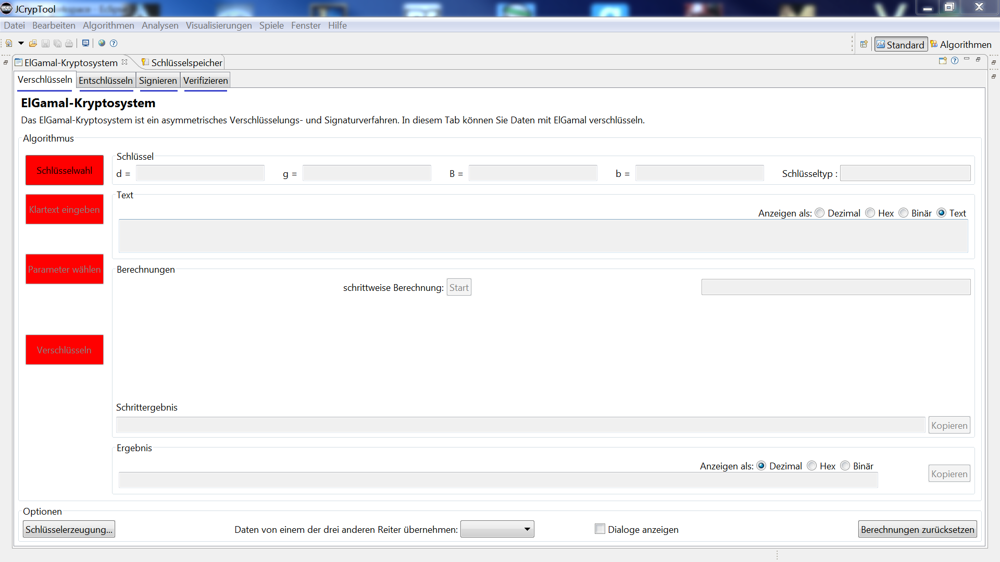
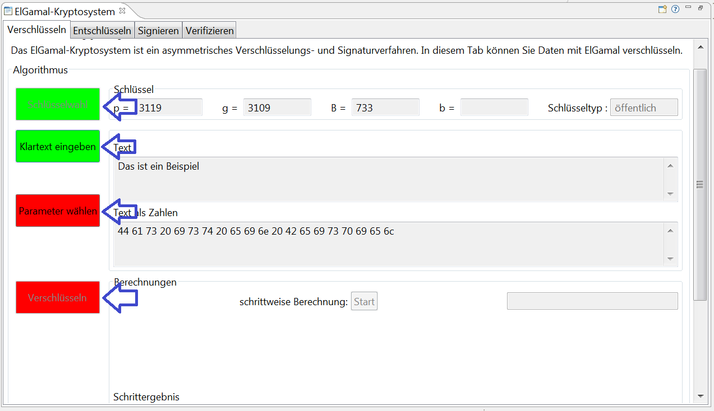
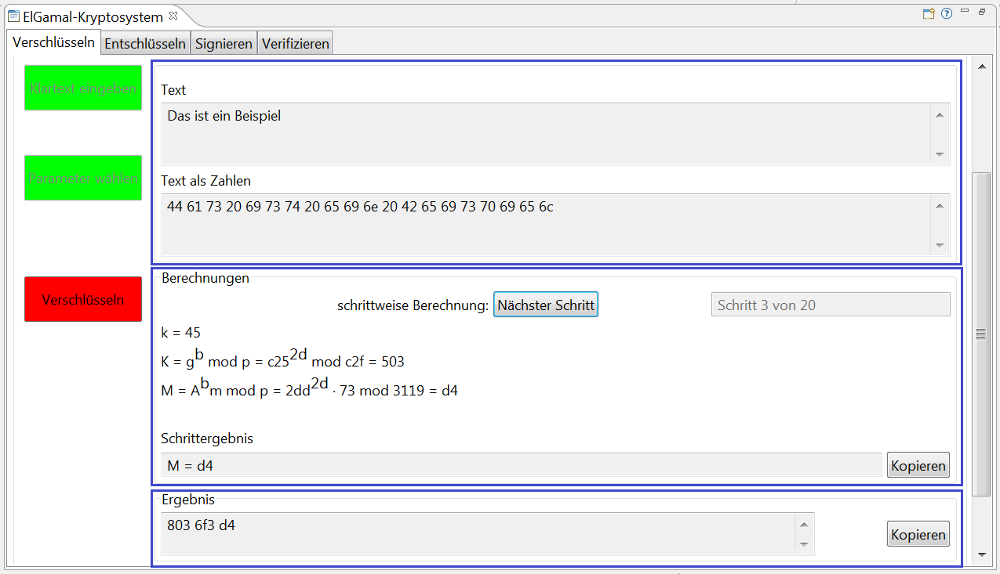

Diese Hilfe beschreibt vor allem die folgenden beiden Punkte:
1) Das ElGamal-Verfahren (Algorithmus)
2) Bedienungsanleitung zu dieser Visualisierung
Das ElGamal-Kryptosystem gibt es in zwei Ausprägungen: zum Verschlüsseln und zum Signieren.
Die ElGamal-Verschlüsselung gehört zu den asymmetrischen Verschlüsselungsverfahren. ElGamal basiert auf der Idee des Diffie-Hellman-Schlüsselaustauschs (DH). Die ElGamal-Verschlüsselung wurde das erste Mal von Taher ElGamal in 1985 beschrieben.
Die ElGamal-Signatur gehört zu den elektronischen Signaturverfahren und basiert auf der Schwierigkeit, diskrete Logarithmen zu berechnen. Die ElGamal-Signatur wurde das erste Mal von Taher Elgamal in 1984 beschrieben.
Während das ElGamal-Signatur-Verfahren nur selten benutzt wird, ist die ElGamal-Verschlüsselung als Alternative zur RSA-Verschlüsselung weit verbreitet. Das Setup und die Schlüsselerzeugung (des privaten und des öffentlichen Schlüssels) sind in beiden ElGamal-Verfahren gleich. Die Verschlüsselung und die Signierung funktionieren jedoch unterschiedlich. Im Gegensatz zum RSA-Kryptosystem hängt ElGamal von der Schwierigkeit ab, diskrete Logarithmen zu berechnen, während RSA von der Faktorisierung großer Zahlen abhängt. Ein weiterer Unterschied ist, dass ElGamal-Verschlüsselung und -Signierung einen zusätzlichen zufälligen Sessionkey brauchen und deshalb probabilistisch sind, was RSA nicht ist.
Wie üblich verwenden wir das Szenario, dass Alice eine Nachricht an Bob sendet. Zum Verschlüsseln der Nachricht braucht sie seinen öffentlichen Schlüssel; zum Signieren benutzt sie ihren privaten Schlüssel.
Wie in allen asymmetrischen Kryptosystemen wird auch im ElGamal-Kryptosystem für jeden Teilnehmer (Alice und Bob) ein Schlüsselpaar (bestehend aus einem öffentlichen und einem privaten Schlüssel) verwendet. Der öffentliche Schlüssel kann veröffentlicht werden. Im Verschlüsselung-Fall wird der öffentliche Schlüssel des Empfängers zum Verschlüsseln benutzt, während der private Schlüssel des Empfängers zum Entschlüsseln benutzt wird. Der private Schlüssel darf nur dem Empfänger bekannt sein. Das bedeutet, dass Bob, der Empfänger der Nachricht, sein Schlüsselpaar nur einmal erzeugen muss. Und danach können Alice und jedermann sonst seinen öffentlichen Schlüssel so oft wie sie wollen benutzen, um Nachrichten zu verschlüsseln und die verschlüsselten Nachrichten an Bob zu senden.
Im Folgenden haben wir 4 Unterkapitel:
Die ersten beiden Unterkapitel gelten für beide ElGamal-Verfahren. Das dritte und vierte Unterkapitel ist unterschiedlich bei den zwei Verfahren ElGamal-Verschlüsselung und ElGamal-Signierung.
Die ElGamal-Verschlüsselung kann über jeder zyklischen Gruppe \(G\) mit endlicher Ordnung definiert werden.
Alice und Bob nutzen jeweils eine eigene zyklische (endliche) Gruppe \(G\) mit \(d\) Elementen (also hat die Gruppe die Ordnung \(d\)). Diese Gruppe wird von dem Generator \(g\) erzeugt, wobei \(g\) ebenfalls ein Element von \(G\) ist. \(d\) ist eine ganze Zahl der Länge \(n\)-Bit (\(n\)-Bit-Zahl). Als Input für die Schlüsselerzeugung wird normalerweise der Sicherheitsparameter \(n\) benutzt. Alle diese Parameter werden veröffentlicht. Als \(G\) wird oft \(Z_d = \{ 0, … , d-1 \}\) mit einer Primzahl \(d\) benutzt.
Anmerkung 1: Das zufällig gewählte d sollte sehr groß sein und ungefähr dieselbe Größenordnung wie ein RSA-Modul haben (1024 - 4096 bit).
Anmerkung 2: Der Generator \(g\) ist eine Zahl mit der besonderen Eigenschaft, dass er eine Primitivwurzel (primitives Element) von \(G\) sein muss.
Anmerkung 3: In diesem Plugin muss \(d > 256\) gewählt werden. Der Grund dafür ist, dass Ihr Eingabetext als Extended ASCII gespeichert wird. Extended ASCII umfasst 256 Zeichen, die jeweils auf ein Element aus der Gruppe \(G\) gemappt werden müssen.
Jedes Subjekt (Teilnehmer wie Alice und Bob) muss die Schlüsselerzeugung genau einmal durchführen (von zeitlicher Begrenzung von Schlüsseln sehen wir hier ab).
Zur Verschlüsselung brauchen wir Bobs öffentlichen Schlüssel. Seine Schlüsselgenerierung funktioniert folgendermaßen:
Für die Signatur von Alice brauchen wir Alice privaten Schlüssel. Ihre Schlüsselgenerierung funktioniert folgendermaßen:
Anmerkung: Die Werte von \(d\) und \(g\) werden von Alice und Bob unabhängig voneinander bestimmt — der Einfachheit halber haben wir für diese Setup-Parameter die Indizes \(A\) und \(B\) weggelassen. Zur Verschlüsselung werden die Werte von Bob benötigt; zum Signieren werden die Werte von Alice benötigt.
Das ElGamal-Verschlüsselungsverfahren besteht aus vier Teil-Schritten: der Parameter-Generierung (Setup), der Schlüsselerzeugung, der eigentlichen Verschlüsselung und der Entschlüsselung. Die ersten zwei Schritte wurden gerade beschrieben, die Umsetzung von Verschlüsselung und Entschlüsselung folgt nun.
Der Verschlüsselungs-Algorithmus funktioniert folgendermaßen: Um die Klartext-Nachricht für Bob zu verschlüsseln, benutzt Alice seinen öffentlichen Schlüssel \((G, d, g, B )\), und dann:
Anmerkung 1: Wenn man \(m'\) kennt, kann man leicht \(B^k\) finden. Deshalb wird für jede Nachricht ein neues \(k\) erzeugt, um die Sicherheit zu verbessern. Aus diesem Grund nennt man \(k\) auch einen kurzlebigen (ephemeral) Schlüssel oder Sessionkey.
Anmerkung 2: Beim Diffie-Hellman-Schlüsselaustausch (DH) würde Alice \(A=g^a\) an Bob senden, damit er den gemeinsamen Sessionkey \(S = A^b\) erzeugen kann. Bei der ElGamal-Verschlüsselung braucht Alice statt ihres privaten Schlüssels \(a\) den ebenfalls zufälligen und geheimen Sessionkey \(k\). Die weitere Logik ist die gleiche.
Anmerkung 3: Bei der ElGamal-Verschlüsselung ist der Geheimtext doppelt so lang wie der Klartext (Nachrichtenausdehnung).
Anmerkung 4: Die ElGamal-Verschlüsselung ist eine probabilistische Verschlüsselung: Der Geheimtext hängt nicht nur vom öffentlichen Schlüssel des Empfängers ab, sondern auch von einem zufälligen \(k\). Das führt dazu, dass wenn man denselben Klartext für denselben Empfänger nochmal verschlüsselt, dann sollte der erhaltene Geheimtext jeweils unterschiedlich sein.
Der Entschlüsselungs-Algorithmus funktioniert folgendermaßen: Um die an Bob gesendete Geheimtext-Nachricht \((K, M)\) zu entschlüsseln, benutzt er seinen privaten Schlüssel \(b\), und dann:
Beachten Sie, dass der Entschlüsselungs-Algorithmus die gewünschte Nachricht erzeugt, weil \(M \cdot S^{-1} = [m' \cdot g^{b \cdot k}] \cdot [g^{b \cdot k}]^{-1} = m' \cdot g^{b \cdot k} \cdot g^{-(b \cdot k)} = m'\).
Wie jedes Signatur-Verfahren erlaubt es auch das ElGamal-Signatur-Verfahren einer dritten Instanz (third-party), die Authentizität einer Nachricht zu prüfen und zu bestätigen. Das ElGamal-Signatur-Verfahren besteht aus vier Teil-Schritten: der Parameter-Generierung (Setup), der Schlüsselerzeugung, der Signierung und der Verifikation. Die ersten zwei Schritte wurden oben beschrieben, die Umsetzung von Signierung und Verifikation folgt nun.
Zusätzlich zu den Setup-Parametern wird eine Kollisions-resistente Hashfunktion H benötigt.
Da für \(G\) normalerweise \(Z^*_d = \{ 1, … , d-1 \}\) mit einer großen Primzahl \(d\) benutzt wird, ist die Berechnung des diskreten Logarithmus modulo \(d\) sehr kompliziert.
Wir nehmen an, dass Alice die Signierende ist.
Der Signierungs-Algorithmus funktioniert folgendermaßen: Um eine Nachricht \(m\) zu signieren, braucht Alice ihren privaten Schlüssel \(a\), und dann:
We nehmen an, dass Bob die von Alice signierte Nachricht verifizieren will.
Der Verifizierungs-Algorithmus funktioniert folgendermaßen: Um eine Nachricht \(m\) von Alice zu verifizieren, benutzt er ihren öffentlichen Schlüssel \((G, d, g, A)\), die erhaltene Signatur \((K, s)\), und dann
Beachten Sie, dass der Verifizierungs-Algorithmus korrekt ist in dem Sinn, dass eine mit diesem Algorithmus erzeugte Signatur immer vom Verifizierer akzeptiert werden kann, weil aufgrund des Signatur-Verfahrens Folgendes gilt:
\begin{alignat}{1}
s &&= k^{-1} \cdot ( H(m) - a \cdot K ) && \mod d-1 \\
H(m) &&= k \cdot s + a \cdot K && \mod d-1
\end{alignat}
und dann aufgrund des kleinen Satzes von Fermat:
\begin{alignat}{1}
u &= g^{H(m)} &&\mod d \\
&= g^{(k \cdot s)} \cdot g^{(a \cdot K)} &&\mod d \\
&= (g^k)^s \cdot (g^a)^K && \mod d \\
&= K^s \cdot A^K &&\mod d \\
u &= v
\end{alignat}
Wir benutzten \(a\) bzw. \(A\) für den privaten bzw. den öffentlichen Schlüssel von Alice (Sender), und \(b\) bzw. \(B\) für den privaten bzw. den öffentlichen Schlüssel von Bob (Empfänger), weil dies die übliche Art ist, wie der Diffie-Hellman-Schlüsselaustausch (DH) beschrieben wird. Dadurch haben wir keine Überlappungen mit den Variablennamen, wenn wir die ElGamal-Verschlüsselung und die ElGamal-Signierung hintereinander beschreiben. Großbuchstaben repräsentieren immer Potenzen zugehöriger, klein-geschriebener Exponenten (jeweils mit der Basis \(g\)).
Andere Autoren oder die deutsche Wikipedia nutzen andere Notationen für die ElGamal-Verschlüsselung und die ElGamal-Signierung. Bei der Verschlüsselung wird der private Schlüssel \(a\) genannt und der zugehörige öffentliche Schlüssel \(A\). Ein anderer Autor nutzt \(x\) als Name für die Nachricht, weil dies der variable Input der Verschlüsselungsfunktion ist.
In der folgenden Tabelle werden unterschiedliche Notationen einander gegenüber gestellt: Spalte 1 orientiert sich am Diffie-Hellman-Schlüsselaustausch (DH) und diese Notation wird auch hier benutzt; Spalte 2 zeigt die Notation in der deutschen Wikipedia (Dezember 2017), die wiederum von der in der englischen Wikipedia abweicht.
| DH-orientiert | Deutsche Wikipedia | Phase / Bedeutung |
|---|---|---|
| \(d\) | \(p\) | Setup: Anzahl der Elemente in \(G\) / große Primzahl |
| \(g\) | \(g\) | Setup: Generator von \(G\) |
| \(b\) | \(a\) | Key Gen: Privater Schlüssel des Empfängers |
| \(B\) | \(A\) | Key Gen: Öffentlicher Schlüssel des Empfängers |
| \(m\) | \(m\) | Verschlüsselung: Gegebener Klartext, bevor auf ein Element in \(G\) gemappt |
| \(m'\) | \(m\) | Verschlüsselung: Klartext (Nachricht), schon gemappt auf ein Element in \(G\) |
| \(k\) | \(r\) (manchmal auch \(y\)) | Verschlüsselung: Zufällige Zahl, die pro Nachricht zu erzeugen ist (geheimer Sessionkey) |
| \(K\) | \(R\) | Verschlüsselung: Öffentlicher Sessionkey (neu pro Nachricht) |
| \(S\) | - | Verschlüsselung: Geheimer Shared Key (for one message) |
| \(M\) | \(c\) | Verschlüsselung: Verschlüsseltes \(m'\) |
| \((K,M)\) | \((R, c)\) | Verschlüsselung: Geheimtext |
| DH-orientiert | Deutsche Wikipedia | Phase / Bedeutung |
|---|---|---|
| \(a\) | \(a\) | Key Gen: Privater Schlüssel des Signierenden |
| \(A\) | \(A\) | Key Gen: Öffentlicher Schlüssel des Signierenden |
| \(m\) | \(m\) | Signieren: Klartext |
| \(H(m)\) | \(H(m)\) | Signieren: Hashwert des Klartexts |
| \(k\) | \(k\) | Signieren: Zufällige Zahl, die pro Nachricht zu erzeugen ist (geheimer Sessionkey) |
| \(K\) | \(r\) | Signieren: Öffentlicher Sessionkey (einer je Nachricht) |
| \(s\) | \(s\) | Signieren: Zweiter Teil der Signatur |
| \((K,s)\) | \((r,s)\) | Signieren: Signatur von \(m'\) |
In der ElGamal-Visualisierung können Sie die gewünschte Teil-Operation – Verschlüsseln, Entschlüsseln, Signieren oder Verifizieren – über den entsprechenden Reiter auswählen.
Jeder Reiter zeigt ein Fenster mit 4 oder 5 Buttons auf der linken Seite zur Steuerung der Schritte:
Nachdem die Daten für einen Schritt eingegeben sind und der Schritt prozessiert ist, ändert sich die Farbe des Buttons von rot auf grün.
Die Felder auf der rechten Seite des Fensters zeigen die jeweiligen Daten und ihre Berechnungen. Sie können die notwendigen Daten nur über Dialogboxen eingeben – diese erscheinen, wenn man einen der Buttons links drückt. Diese Dialoge prüfen die eingegebenen Daten auch gleich auf Korrektheit für den Algorithmus. Erneutes drücken des Buttons lädt den Eingabedialog erneut und Sie können Ihre bereits eigegebenen Werte bearbeiten.
Im unteren Teil der Fenster finden Sie die Optionen:
Weitere Informationen zum ElGamal-Kryptosystem finden Sie bei: